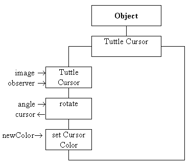
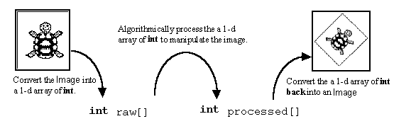
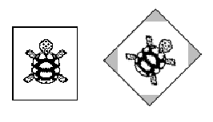

The TuttleCursor class supplies a cursor to the Tuttle class. The cursor has to be capable of being rotated to indicate the direction of the tuttle and has to be capable of being re-colored to indicate the foreground color of the tuttle. Its class diagram is given in Figure 4.7. This class is being introduced not only to supply the Tuttle class with a suitable cursor but also to introduce the techniques by which an Image can be algorithmically processed by a Java artifact. As with the Tuttle class itself a detailed knowledge of the implementation of this class is not required for the use of the Tuttle object, although the techniques are essential for the development of any Java image processing applications.

Figure 4.7 The TuttleCursor class diagram.
The image which is to be used as the cursor is supplied to the TuttleCursor constructor from the private initialiseCursor() method of the Tuttle class whose implementation, which was omitted above, is as follows.
0078 private void initialiseCursor(){
0079
0080 MediaTracker tuttleTracker;
0081
0087 theCursor = ( itsApplet.getImage(
0088 itsApplet.getCodeBase(), "Tuttles/tuttle.gif"));
0089 tuttleTracker = new MediaTracker( this);
0090 tuttleTracker.addImage( theCursor, 0);
0091 try {
0092 tuttleTracker.waitForID( 0);
0093 } catch ( InterruptedException exception) {
0094 // Do nothing!
0095 } // End try/ catch.
0096
0097 if ( (theCursor == null) ||
0098 (theCursor.getWidth( this) < 1) ||
0099 (theCursor.getHeight( this) < 1) ){
0100 System.out.println( "Empty cursor image ... abending");
0101 System.exit( -1);
0102 } // End if.
0103 rotatingCursor = new TuttleCursor( theCursor, this);
0104 rotatingCursor.setCursorColor( currentForeground);
0105 theCursor = rotatingCursor.rotate( direction);
0106 } // End initialiseCursor.
The tuttle cursor is stored as a GIF format image in a file called "tuttle.gif", which is assumed to be located in a sub-directory, called Tuttles, of the directory containing the Tuttles package. This image has to be retrieved from the file and imported into the applet as a Java Image instance.
In order to accomplish this the Applet getImage() method is called on lines 0087 and 0088. The arguments to this method are the codeBase of the Applet, which is the Internet location where the applet was downloaded from; and the name of the file at this location. The second argument indicates that the file which contains the image ("tuttle.gif") is contained in the Tuttles sub-directory of the Tuttles package directory. This method executes asynchronously in a separate thread of control and lines 0089 to 0095 involve the use of a MediaTracker instance to suspend the current thread until the image has completely loaded.
MediaTrackers allow monitoring and synchronization of the separate threads which are loading multimedia files, as mentioned above. In this example, on line 0090, the tuttleTracker is asked to monitor the loading of the theCursor Image. The second argument to the addImage() method indicating the degree of priority to be used and allowing one of a number of activities which a MediaTrackers instance might be monitoring to be identified. Lines 0091 to 0095 then effectively suspend the main thread until the image in the "tuttle.gif" file has been fully loaded.
It is possible that the image will not load, possibly because the file containing it could not be found or does not contain a valid image. Accordingly, lines 0097 to 0102 contain a guard which abends the program if the cursor image cannot be obtained. Once it is certain that the cursor image has loaded, and thus that theCursor Image is complete, on line 0103, the TuttleCursor constructor is called passing theCursor image and identity of the Tuttle component being constructed as arguments. Finally on lines 0104 and 0105 the setCursorColor() and rotate() methods of the newly constructed TuttleCursor instance, rotatingCursor, are called to ensure that theCursor is ready for use.
The declaration of the TuttleCursor class, as far as the start of its constructor, is as follows.
0001 // Filename TuttleCursor.java.
0002 // Provides a rotating cursor capability for the
0003 // Tuttle class.
0004 //
0005 // Written for the Java Interface Book Chapter 4.
0006 // Fintan Culwin, v 0.2, August 1997.
0007
0009 package Tuttles;
0011
0012 import java.awt.*;
0013 import java.awt.image.*;
0014 import java.lang.Math;
0016
0017 class TuttleCursor extends Object {
0018
0019 private int imageWidth;
0020 private int imageHeight;
0021 private int pixels[];
0022 private int rotatedPixels[];
0023 private Component component;
0024 private Image rotatedImage;
The TuttleCursor class encapsulates two arrays of integers. One, called pixels, contains a copy of the cursor Image. The second, called rotatedPixels, is used to contain a rotated copy of the first, which will be transferred as an Image into the rotatedImage attribute when rotation is required. The imageWidth and imageHeight attributes store the size of the cursor image.
This provides a common pattern for image processing operations which can be adapted for use when other operations are required. The pattern of operations is illustrated in Figure 4.8. It shows that the Image has first to be converted into a one dimensional array of int, which can then be processed, in this example being rotated, before it is converted back into an Image.

Figure 4.8 Algorithmic processing of an Image.
The implementation of the TuttleCursor constructor is as follows.
0028 protected TuttleCursor( Image toRotate,
0029 ImageObserver observer) {
0030
0031 PixelGrabber grabber;
0032 boolean status;
0033
0034 component = observer;
0035 imageWidth = toRotate.getWidth( observer);
0036 imageHeight = toRotate.getHeight( observer);
0037 pixels = new int[ imageWidth * imageHeight];
0038 rotatedPixels = new int[ imageWidth * imageHeight];
0039
0040 grabber = new PixelGrabber( toRotate, 0, 0,
0041 imageWidth,imageHeight,
0042 pixels, 0, imageWidth);
0043 try {
0044 status = grabber.grabPixels();
0045 if ( !status) {
0046 throw new InterruptedException();
0047 } // End if.
0048 } catch ( InterruptedException exception) {
0049 System.err.println("Exception grabbing pixels ... abending");
0050 System.exit( -1);
0051 } // End try/catch.
0052 } // End TuttleCursor constructor.
The TuttleCursor constructor requires the Image to be used for the cursor and also an ImageObserver, for reasons as discussed above and as will be elaborated below. The first part of the constructor, on line 0034, stores the identity of the ImageObserver in the observer instance attribute. The width and height of the cursor image are then obtained, using the toRotate getWidth() and getHeight() methods which both require an ImageObserver argument. Having established the size of the cursor image, on lines 0037 and 0038, the sizes of the int pixels array, which will contain the raw image and the int rotatedPixels array, which will contain the processed image, can be established.
On lines 0040 to 0042 an instance of the PixelGrabber class is constructed whose arguments ensure that it will be capable of extracting all the pixels from the toRotate Image into the pixels array. This will comprise the first part of the image processing pattern shown in Figure 4.8. The grabbing is accomplished within the try/ catch structure guarding the call of the grabPixels() method on lines 0044 whose catch part abends the program should it fail.
The outcome of the constructor is that the pixels array contains a representation of the toRotate Image containing the cursor. This representation will be processed into the rotatedPixels array, implementing the second stage from Figure 48. The implementation of the rotate() method, is as follows.
0059 protected Image rotate( int angle) {
0060
0061 int x, y;
0062 int fromX, fromY;
0063 int toX, toY;
0064 int transparent = 0x00000000;
0065 double radians = (((double) (-(angle -180) ) %360) / 180.0) * Math.PI;
0066 double cosAngle = Math.cos( radians);
0067 double sinAngle = Math.sin( radians);
0068
0069
0070 for ( y = 0; y < imageHeight; y++) {
0071 for ( x = 0; x < imageWidth; x++) {
0072 // Rotate around the center of the image.
0073 toX = ( imageWidth /2) - x;
0074 toY = ( imageHeight /2) - y;
0075 fromX = (int)( ( toX * cosAngle) - ( toY * sinAngle));
0076 fromY = (int)( ( toX * sinAngle) + ( toY * cosAngle));
0077 fromX += imageWidth /2;
0078 fromY += imageHeight /2;
0079
0080 if ( (fromX < 0) || (fromX >= imageWidth) ||
0081 (fromY < 0) || (fromY >= imageHeight) ){
0082 // Rotated point is outside the image
0083 rotatedPixels[ (y * imageWidth) + x] = transparent;
0084 } else {
0085 rotatedPixels[ (y * imageWidth) + x] =
0086 pixels[ (fromY * imageWidth) + fromX];
0087 } // End if.
0088 } // End x loop.
0089 } // End y loop.
0090
0093 rotatedImage = component.createImage(
0094 new MemoryImageSource( imageWidth, imageHeight,
0095 rotatedPixels, 0, imageWidth));
0096 return rotatedImage;
0097 } // End rotate.
Before considering the details of this method the 32 bit RGB pixel value as shown in Figure 4.4 needs to be reconsidered. The upper eight bits in locations 24 to 31, shown as AA, control the transparency of the pixel. A pixel value which has all of these bits set (the hexadecimal value 0xFF) is completely opaque and the RGB color in the remaining 24 bits will be rendered exactly as specified onto the image. A pixel value which has all of these bits clear (the hexadecimal value 0x00) is completely transparent and the RGB color in the remaining 24 bits is irrelevant as it will not be rendered. Intermediate values produce a varying degree of transparency. This information is known as the alpha channel and a full 32 bit pixel value in this format is known as an ARGB value.
The image which is used as the cursor has been prepared so that it contains only two colors and all the pixels in the image which do not form a part of the cursor have their alpha values set so as to be transparent. When the cursor is rendered the transparent parts will have no effect upon the existing background of the Tuttle area. This consideration is also required when the image is rotated; any parts of the rotated image which would have come from outside the cursor are set to the value of the transparent mask as declared on line 0064 of the listing. This consideration is illustrated in Figure 4.9.

Figure 4.9 Rotating an
image, the gray areas indicate the parts of the
rotated image which originated outside the original image.
Design Advice
When rotating an image, calculate the location where each pixel of the rotated area comes from not the location where each pixel on the original image will be rotated to. This will avoid gaps appearing in the image.
The rotating of the cursor takes place within the double loop between lines 0070 and 0089. Each pixel on the rotated image is considered in turn and the location on the original image where it might have originated from is determined using the appropriate trigonometric transformation. If the if decision on lines 0080 and 0081 indicates that the original location is outside the bounds of the original image, the rotated pixel is set to the transparent mask. Otherwise the location is known to be within the bounds and the pixel value is copied from the original image to the rotated image on lines 0085 and 0086.
This implementation is further complicated by two other factors. Firstly the image is rotated around its center point, so the locations where the pixel is to be moved to ( toX and toY) and where it is moved from ( fromX and fromY) have to be expressed as displacements from the center as the rotation is performed in lines 0083 to 0086. However the y and x indices of the loops are expressed in the normal top left bottom right scan line sequence and the fromX and fromY are converted to this convention in lines 0077 and 0078.
The second complication is that the pixel and rotatedPixel arrays are single dimensional, as required by the PixelGrabber class, and the two coordinate values have to be combined when the array is accessed between lines 0083 to 0086.
Once the original image in the pixels array has been rotated into the rotatedPixels array, the rotatedPixels array is used to construct an Image instance on lines 0093 to 0095, implementing the third part of Figure 4.8. This step employs an instance of the MemoryImageSource class to accomplish the conversion and the Image produced from it is returned from the method, and used by the Tuttle class to indicate the direction of the tuttle.
The implementation of the setCursorColor() method is simpler. Its requirement is to consider each pixel in the pixel array and, if it is not a transparent pixel, replace its value with a non-transparent newColorMask obtained from the newColor argument. Its implementation is as follows.
0100 protected void setCursorColor( Color newColor) {
0101
0102 int x, y;
0103 int newColorMask = 0;
0104 int transparentMask = 0xFF000000;
0105
0106 newColorMask = transparentMask |
0107 (newColor.getRed() << 16) |
0108 (newColor.getGreen() << 8) |
0109 newColor.getBlue();
0110
0111 for ( y = 0; y < imageHeight; y++) {
0112 for ( x = 0; x < imageWidth; x++) {
0113 if ( (pixels[ (y * imageWidth) + x] & transparentMask)
0114 == transparentMask ) {
0115 pixels[ (y * imageWidth) + x] = newColorMask;
0116 } // End if.
0117 } // End x loop.
0118 } // End y loop.
0119 } // End setCursorColor.
The newColorMask is constructed from the transparentMask and the RGB components of the newColor, obtained using the getRed(), getGreen() and getBlue() methods on lines 0106 to 0109. This is accomplished using the bitwise left shift operator ( << ) and bitwise oring ( | )of the resulting values so as to produce a 32 bit ARGB value as illustrated in Figure 4.4. The pixels array is then processed by having every value considered and if it is not transparent is replaced with the newColorMask on line 0015. This will ensure that the next time a cursor is requested by using the rotate() method, the color of the cursor will have changed.
The techniques used in the TuttleCursor class are also used in the Tuttle setBackground() method, which was omitted above. Its implementation is as follows.
0228 public void setBackground( Color newColor) {
0229
0230 int x, y;
0231 int pixels[];
0232 Image newImage;
0233 int newColorMask;
0234 int oldColorMask;
0235 Color oldColor;
0236
0237 PixelGrabber grabber;
0238 boolean status;
0239
0240 pixels = new int[ screenWidth * screenHeight];
0241 newColorMask = 0xFF000000 |
0242 (newColor.getRed() << 16) |
0243 (newColor.getGreen() << 8) |
0244 newColor.getBlue();
0245 oldColorMask = 0xFF000000 |
0246 (currentBackground.getRed() << 16) |
0247 (currentBackground.getGreen() << 8) |
0248 currentBackground.getBlue();
0249
0250 newImage = createImage( tuttleImage.getSource());
0251 grabber = new PixelGrabber( newImage,
0252 0, 0,
0253 screenWidth, screenHeight,
0254 pixels, 0, screenWidth);
0255
0256 try {
0257 status = grabber.grabPixels();
0258 if ( !status) {
0259 throw new InterruptedException();
0260 } // End if.
0261 } catch ( InterruptedException exception) {
0262 System.err.println("Exception grabbing pixels ... abending");
0263 System.exit( -1);
0264 } // End try/catch.
0265
0266 for ( y = 0; y < screenHeight; y++) {
0267 for ( x = 0; x < screenWidth; x++) {
0268 if ( pixels[ (y * screenWidth) + x] == oldColorMask) {
0269 pixels[ (y * screenWidth) + x] = newColorMask;
0270 } // End if.
0271 } // End x loop.
0272 } // End y loop.
0273
0274 newImage = this.createImage( new MemoryImageSource(
0275 screenWidth, screenHeight,
0276 pixels, 0, screenWidth));
0277 tuttleGraphics.drawImage( newImage, -(screenWidth /2),
0278 -(screenHeight /2), this);
0279
0280 currentBackground = newColor;
0281 repaint();
0282 } // End setBackground.
This method operates by obtaining a copy of the Image as an array of pixels, between lines 0250 and 0264, which is the first part of Figure 4.8. The method then iterates through the array replacing any pixel which has the oldColorMask value with the newColorMask value, which is the second part of Figure 4.8. It then recreates an Image in newImage from the pixel array, on lines 0274 to 0276, which is the third part of Figure 4.8. It concludes by copying the processed newImage it into the tuttleImage attribute on lines 0277 and 0278, causing it to be displayed when the repaint() method is called on line 0281, after it has noted the newColor in its currentBackground attribute. The effect is for any pixels of the old background color to be replaced with pixels of the new background color and leaving the rest of the image unchanged.
The pattern for the processing of an Image, shown in Figure 4.8, has been demonstrated twice in this section. It was used in the rotate() method of the TuttleCursor class and also in the setBackground() method of the Tuttle class. This pattern of actions, and the Java techniques to implement them, can be adapted for other image processing operations, some possible operations are suggested in the end of chapter exercises.